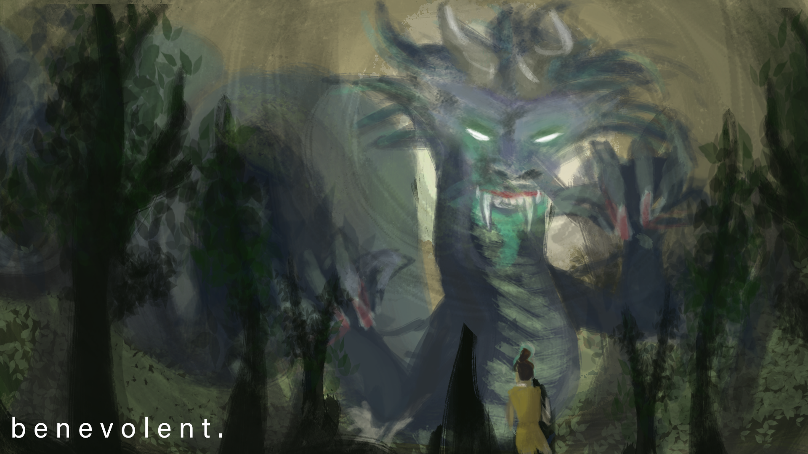
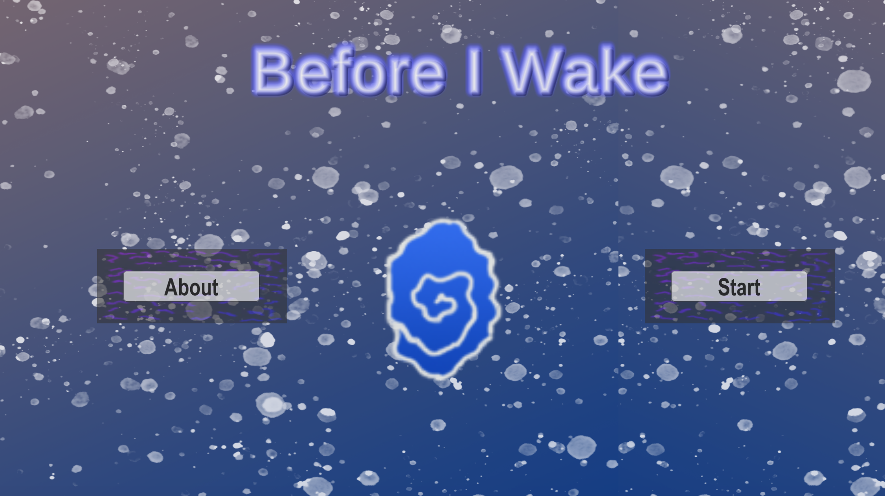

Games
benevolent.
“Consider the past, and you may know the future.” Four Benevolent Creatures of the Si Xiang rule the cardinal directions and each has a
story to tell. But as time moves on, we forget our past and where we came from, and the narratives that once guided villages fade out of
existence. You, the player, look to obtain the knowledge of the Dragon, Tiger, Phoenix, and Tortoise to guide your people. You must traverse
the Dungeons of the Benevolent in search of the missing history, and fill up your journal to recall the values and virtues of old. benevolent
is a puzzle solving exploration game I created with fellow students from MSU's game design program. The game is set in Chinese mythology and will
test your problem solving skills.


Before I Wake
Before I Wake is a thrilling stealth rogue-lite. In this game you play as a lost soul, trapped in your body and stuck in a realm between
life and death: you must use stealth to avoid the demons who wish to stop you from getting back. Explore this unknown place, and collect and master
the 7 deadly sins in order to cleanse your spirit and return to your former self. A procedural system will make every play through unique by changing
the order of the levels. We hope you enjoy this early version of Before I Wake! -Team Gimjg